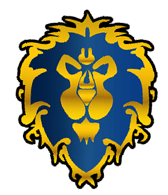
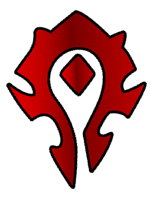

⚔ Les Factions de Gardenia ⚔
Depuis des générations, deux grandes puissances façonnent l'histoire du monde. L'Alliance et la Horde s'opposent autant par leurs traditions que par leur vision de l'avenir. Chaque aventurier devra choisir son camp et défendre ses idéaux.

L'AllianceL'Alliance représente l'ordre, la stabilité et la protection des peuples civilisés. Fondée sur l'honneur, la justice et la coopération, elle rassemble les royaumes humains et les forteresses naines.
Races de l'Alliance
Humains
Les humains sont les bâtisseurs des plus grands royaumes de Gardenia. Polyvalents et ambitieux, ils excellent aussi bien dans les arts militaires que diplomatiques.
Nains
Les nains vivent dans d'imposantes cités creusées au cœur des montagnes. Leur peuple est célèbre pour ses artisans, ses ingénieurs et ses guerriers.
Valeurs
- Honneur
- Justice
- Discipline
- Coopération

La HordeLa Horde rassemble les peuples qui ont forgé leur destinée à travers les épreuves. Unie par l'honneur, la liberté et le respect des traditions ancestrales, elle refuse toute domination étrangère.
Races de la Horde
Orcs
Les orcs sont des guerriers fiers et courageux. Ils accordent une grande importance aux clans, à la famille et à l'honneur.
Trolls
Les trolls sont un peuple ancien vivant en harmonie avec les esprits et les forces de la nature. Leurs traditions remontent à des temps immémoriaux.
Valeurs
- Honneur
- Force
- Traditions
- Liberté
⚔ Choisissez votre destin ⚔
Rejoindrez-vous les royaumes de l'Alliance ou les clans de la Horde ? Votre choix influencera vos alliances, vos ennemis et votre histoire au sein de Gardenia.